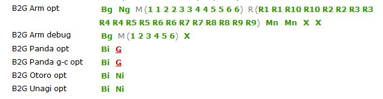
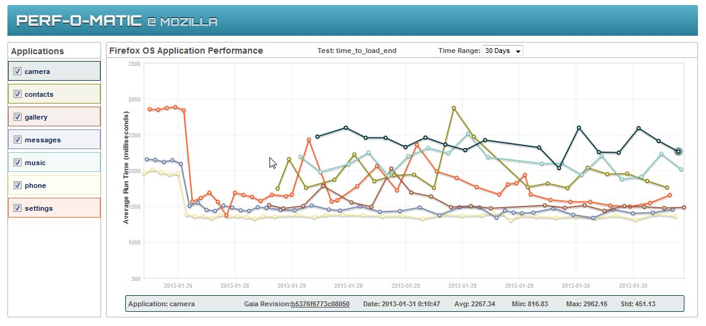

Automating Firefox OS

Dave Hunt <dhunt@mozilla.com> | Henrik Skupin <hskupin@mozilla.com>
2.5 million lines of code. 30 commits per day. 255 contributors...
and that's just the user interface!
We also have WebAPI testing, application performance testing, update testing, and much more...
The only way to keep up is to automate!


Dashboard: https://datazilla.mozilla.org/b2g/
pip install gaiatestRepository: https://github.com/mozilla/gaia-ui-tests
Slides: http://bit.ly/fosdem13mozauto
Dave Hunt <dhunt@mozilla.com> (davehunt on IRC)
Henrik Skupin <hskupin@mozilla.com> (whimboo on IRC)
Automation Development:
https://wiki.mozilla.org/Auto-tools/Automation_Development/
irc://irc.mozilla.org:6667/#automation